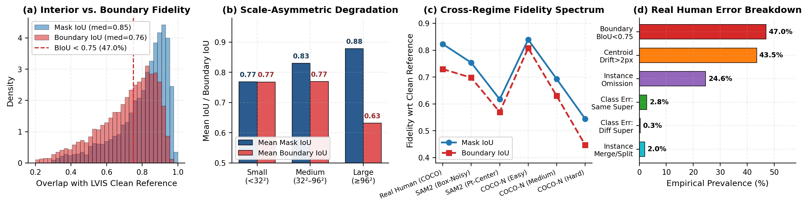

Learning Instance Segmentation with Noisy Labels
1 Technion – Israel Institute of Technology 2 Ben-Gurion University of the Negev
* Corresponding author: moshekimhi@cs.technion.ac.il
Natural objects rarely have razor-sharp binary outlines.
Keep the object core crisp. Model contested contours with a directional Fréchet copula.
In his Renaissance treatise on painting (Trattato della Pittura), Leonardo da Vinci pioneered sfumato—blending object contours "without lines or borders, in the manner of smoke." Modern segmentation datasets force annotators and weak prompts into hard binary polygons, creating pervasive geometric and semantic noise. We audit 24,809 overlapping COCO–LVIS images, release a unified noisy-label benchmark suite, prove why classical LNL fails on 2D masks, and introduce CB-LNL (Copula-Boundary-LNL).
Unified evaluation across ResNet-50-FPN, ConvNeXt-Tiny-FPN, and Swin-Tiny-FPN · MS-COCO, LVIS v1, SAM2, and VIPER (1920×1080)
See what noisy polygons miss.
Drag the curtain to repair them.
Select any real MS-COCO training scene below and switch the Left Layer between crowdsourced human polygons (COCO-RealNoise), foundation-model weak prompts (SAM2 Box / Click), procedural stress tiers (COCO-N), or isolated geometric operators (coral highlights indicate contour errors against the clean reference). Drag the split curtain to compare against our CB-LNL Cleaned repair or the Clean Reference (LVIS v1) on the right.
Scene 1: Cat, Potted Plant & TV (COCO #37907)
Standard Mask IoU stays deceptively high because interior pixels dominate area, whereas Boundary IoU (BIoU) exposes severe contour degradation.
Breaking through the ln 2 boundary entropy floor
via a directional Fréchet copula.
While classification loss easily detects category flips (AUROC = 0.95, 5.5× separation), full-mask BCE averages over all 28×28 = 784 RoI pixels—where 85%–95% of inner pixels are uncorrupted—diluting contour noise detection to near-chance (AUROC = 0.55). Even isolating the 1-pixel border band Bd hits a physical wall: due to sub-pixel anti-aliasing and RoI quantization, a 100% clean natural edge sits near p(u) ≈ 0.50 with entropy BCE(0.5, 1) = ln 2 ≈ 0.693 nats. Our CB-LNL converts this ill-posed 1D single-pixel check into a 2D directional cross-contour joint agreement test using the Fréchet copula Cλ(a, b) = (1 − λ)ab + λ min(a, b).
Test the 3 Boundary States of a Contour Pixel u ∈ Bd
Single-Pixel BCE vs. Directional Copula Agreement
Isolate the Contour Band Bd
Because 85%–95% of inner object core pixels Id remain uncorrupted even under polygon simplification, Boundary-LNL leaves Id untouched and fits disentangled 2-GMM cleanliness posteriors over classification and boundary-band losses.
Directional Fréchet Copula
Isotropic border averaging cancels out across an edge (0.90 interior + 0.10 exterior = 0.50). CB-LNL decomposes neighborhoods into interior-facing pin and inverse-exterior 1 − pout, calibrating λ̂ online via tangential moment matching.
Class–Spatial Routing & Repair
Coupling Pcls(c | xi) with regional mask coherence ssp(c) routes supervision away from wrong categories, while offline copula auditing heals polygon cuts and erodes box bleeds across entire datasets.
24,809 overlapping COCO vs. LVIS images.
Four laws of real-world segmentation noise.
Aligning MS-COCO crowdsourced annotations against high-precision LVIS v1 re-annotations across 24,809 shared images (59,840 matched object pairs) uncovers four governing laws: (1) 47.0% of human masks fall below BIoU = 0.75 despite high Mask IoU (0.85); (2) human polygons use only 42.4% as many vertices as LVIS; (3) an inverse Scale-Asymmetric Vulnerability Crossover where small objects lose Mask IoU to hand-eye drift while large objects suffer severe Boundary IoU collapse (0.632); and (4) 88.9% of human class confusions occur within the exact same super-category.

Rigorous evaluation across seeds,
frozen predictions, and dataset cleaning.
All models are evaluated against the strictly fixed LVIS-verified Clean Reference validation split (val_clean_lvis_ref.json). Switch between the four experimental suites below to inspect our 3-seed paired comparisons, frozen-prediction scoring controls, controlled cleaning vs. direct teacher-mask replacement, and multi-architecture vulnerability.
| Method | RealNoise (Mask / Bnd) | WAN-Box (Mask / Bnd) | WAN-Point (Mask / Bnd) | COCO-N Easy (Mask / Bnd) | COCO-N Med (Mask / Bnd) | COCO-N Hard (Mask / Bnd) |
|---|---|---|---|---|---|---|
| Standard (CE + BCE) | 30.45 / 17.05 | 28.63 / 16.57 | 26.21 / 15.04 | 29.09 / 16.29 | 26.70 / 14.34 | 24.09 / 10.48 |
| SCE / GCE | 29.52 / 30.01 (Bnd: 16.40) | 27.17 / 28.53 (Bnd: 16.29) | 25.30 / 25.94 (Bnd: 15.26) | 28.91 / 29.68 (Bnd: 16.86) | 26.22 / 27.21 (Bnd: 14.34) | 23.16 / 23.07 (Bnd: 10.13) |
| DivideMix-Cls / DivideMix-Mask | 27.06 / 28.32 (Bnd: 15.33) | 25.10 / 27.44 (Bnd: 15.53) | 22.75 / 25.78 (Bnd: 14.99) | 27.24 / 29.40 (Bnd: 16.57) | 25.25 / 26.01 (Bnd: 13.92) | 21.92 / 23.39 (Bnd: 10.39) |
| Spatial Self-Correction | 29.87 / 16.53 | 27.69 / 15.68 | 25.32 / 14.28 | 28.91 / 15.90 | 26.82 / 14.47 | 23.51 / 10.71 |
Boundary-LNL (Ours, Seed 1) |
30.54 / 17.19 | 28.50 / 16.71 | 25.97 / 15.16 | 29.68 / 16.86 | 28.30 / 15.48 | 24.97 / 11.45 |
CB-LNL (Ours, Seed 1) |
30.87 / 17.22 | 28.14 / 16.48 | 26.07 / 15.78 | 30.01 / 17.19 | 28.45 / 15.33 | 25.62 / 11.25 |
| Standard (3-Seed Mean ± Std) | 30.19±0.26 / 16.87±0.17 | — | — | — | 27.48±0.83 / 14.60±0.28 | — |
Boundary-LNL (3-Seed Mean ± Std) |
30.85±0.34 / 17.44±0.22 | — | — | — | 28.12±0.16 / 15.31±0.17 | — |
CB-LNL (3-Seed Mean ± Std) |
30.54±0.35 / 17.25±0.08 | — | — | — | 28.57±0.27 / 15.37±0.04 | — |
Paired Δ (CB-LNL − Boundary-LNL) |
−0.31±0.56 / −0.19±0.23 | — | — | — | +0.44±0.38 (3/3+) / +0.06±0.20 (2/3+) | — |
| Scoring Rule (Identical Frozen Checkpoint) | COCO-N Med AUROC ↑ | COCO-N Med PR-AUC ↑ | COCO-N Med Sfumato Edge FPR@80%TPR ↓ | RealNoise (LVIS) AUROC ↑ | RealNoise (LVIS) PR-AUC ↑ | RealNoise Sfumato Edge FPR@80%TPR ↓ |
|---|---|---|---|---|---|---|
Whole-Mask BCE (ℓ_mask^full) |
0.7143 | 0.7625 | 36.72% | 0.6412 | 0.6745 | 71.16% |
Boundary-Band BCE (ℓ_bnd on B_1) |
0.7915 | 0.8518 | 28.54% | 0.6290 | 0.6621 | 69.30% |
Simple Directional Contrast (p_in − p_out) |
0.6856 | 0.7287 | 39.95% | 0.6334 | 0.6616 | 55.81% |
CB-LNL Fréchet Copula (Ours) |
0.7880 | 0.8511 | 23.33% (Lowest) | 0.6469 (Best) | 0.6776 (Best) | 61.86% (−7.4% vs. Bnd BCE) |
| Dataset / Regime | Supervision / Repair Method | Beneficial / Harmful Edits (%) | LVIS-Verified BIoU (Full Split) | Mask AP ↑ | Boundary AP ↑ | Box AP ↑ |
|---|---|---|---|---|---|---|
| COCO-RealNoise | Original Annotations + Standard | — | 70.75% (88.25%) | 30.45 | 17.05 | 32.03 |
| COCO-RealNoise | Direct Teacher-Mask Replacement + Standard | 50.7% / 44.8% (Degrades polygons) | 70.75% → 68.72% (−2.03%) | 30.31 | 16.61 | 31.82 |
| COCO-RealNoise | CB-LNL Cleaned + Standard |
51.4% / 38.6% | 70.75% → 71.54% (90.09%) | 30.52 | 16.81 | 31.49 |
| COCO-N Medium | Original Annotations + Standard | — | 64.41% (68.26%) | 26.70 | 14.34 | 28.46 |
| COCO-N Medium | Direct Teacher-Mask Replacement + Standard | 74.6% / 24.1% (Shrinks boxes) | 64.41% → 71.59% | 27.17 | 14.42 | 27.78 (−0.68) |
| COCO-N Medium | CB-LNL Cleaned (1-Stage Frozen Teacher) + Standard |
83.3% / 12.8% | 64.41% → 72.39% | 27.52 | 15.11 | 29.29 (+1.51) |
| COCO-N Medium | CB-LNL Cleaned (Multi-Stage) + Standard / CB-LNL |
100% Prec@100 | 68.26% → 77.66% (+9.4%) | 28.93 / 29.17 | 15.27 / 16.17 | 30.57 / 30.56 |
| COCO-N Med (Full High-Res) | Standard / Boundary-LNL |
AP75: 29.59 / 30.36 | AUROC: 0.743 / 0.749 | 28.11 / 29.04 | 15.87 / 16.84 | 31.39 / 32.38 |
| COCO-N Med (Full High-Res) | CB-LNL / CB-LNL-EMA (Momentum Teacher) |
AP75: 31.32 / 31.56 (+1.97) | AUROC: 0.753 / 0.756 | 29.44 / 29.74 | 16.82 / 17.25 | 32.41 / 32.66 |
| Dataset | Supervision Regime | Mask AP (R50 / ConvNeXt-T / Swin-T) | Boundary AP (R50 / ConvNeXt-T / Swin-T) | Box AP (R50 / ConvNeXt-T / Swin-T) |
|---|---|---|---|---|
| COCO-RealNoise | Clean Reference (Noisy Val in parens) | 30.89 (28.31) / 31.26 (28.76) / 31.34 (28.71) | 17.56 (16.41) / 17.85 (16.58) / 17.86 (16.57) | 32.02 / 32.16 / 32.65 |
| COCO-RealNoise | Noisy COCO (Exposes Noisy Validation Illusion) | 30.45 (29.83) / 30.69 (30.22) / 30.94 (30.59) | 17.05 (16.82) / 17.00 (16.90) / 17.16 (17.07) | 32.03 / 32.25 / 32.62 |
| COCO-WAN (SAM2) | WAN-Box (Clean) → WAN-Box (Noisy) | 30.87 / 31.71 / 31.69 → 28.63 / 28.98 / 29.17 | 18.21 / 18.51 / 18.76 → 16.57 / 16.98 / 17.05 | 32.00 / 32.89 / 32.72 → 31.12 / 31.42 / 31.66 |
| COCO-WAN (SAM2) | WAN-Point (Center) → WAN-Point (Random) | 26.21 / 26.76 / 26.47 → 25.00 / 25.43 / 25.56 | 15.04 / 15.56 / 15.32 → 14.23 / 14.57 / 14.79 | 26.64 / 27.14 / 26.82 → 25.63 / 25.99 / 26.24 |
| COCO-N | Easy → Medium → Hard | 29.09 / 30.10 / 29.55 → 26.70 / 26.57 / 27.51 → 24.09 / 24.67 / 24.51 | 16.29 / 16.91 / 16.70 → 14.34 / 14.25 / 14.97 → 10.48 / 10.97 / 10.75 | 30.89 / 31.59 / 30.92 → 28.46 / 28.18 / 29.21 |
| VIPER-N (1920×1080) | Clean → Easy → Medium → Hard (R50 / Swin-T) | 24.19 / 24.75 → 21.86 / 22.42 → 19.65 / 20.14 → 17.56 / 18.02 | 15.93 / 16.34 → 14.12 / 14.56 → 11.82 / 12.24 → 9.76 / 10.12 | 29.05 / 29.68 → 24.18 / 24.76 (Med) |
Download the annotations.
Plug into any COCO pipeline in 3 lines.
All benchmark annotations—including COCO-RealNoise, COCO-WAN (SAM2), COCO-N (Easy/Medium/Hard across 3 seeds), all 13 single-factor disentanglement splits, CB-LNL Cleaned annotations, and VIPER-N—are hosted on Hugging Face in standard MS-COCO JSON format.
Kimhi/coco-n
Complete MS-COCO noisy-label suite: coco_realnoise/ (LVIS Clean Ref + Real Noisy), coco_wan/ (4 SAM2 prompt regimes), coco_n/ (Easy/Med/Hard × 3 seeds), coco_n_ablations/ (13 single-factor splits), and cb_lnl_cleaned/.
Kimhi/viper-n
High-resolution (1920×1080) urban driving noisy instance segmentation benchmark: viper_n/easy_seed1.json, medium_seed1.json, hard_seed1.json, plus aligned train_clean.json and val_clean.json.
Kimhi/viper
Full VIPER driving image archives (images/train, images/val) packaged together with clean COCO-format instance segmentation annotations. Pair directly with Kimhi/viper-n.
# 1. Download official MS-COCO 2017 images (cocodataset.org)
mkdir -p datasets/coco/images && cd datasets/coco/images
wget http://images.cocodataset.org/zips/train2017.zip
wget http://images.cocodataset.org/zips/val2017.zip
unzip -q train2017.zip && unzip -q val2017.zip
# 2. (Optional) Official LVIS v1.0 annotations (lvisdataset.org)
wget https://dl.fbaipublicfiles.com/LVIS/lvis_v1_train.json.zip
wget https://dl.fbaipublicfiles.com/LVIS/lvis_v1_val.json.zipfrom huggingface_hub import snapshot_download
from pycocotools.coco import COCO
# Download all benchmark annotations from Hugging Face
root = snapshot_download("Kimhi/coco-n", repo_type="dataset")
# Drop-in replacements for instances_train2017.json:
coco_real = COCO(f"{root}/coco_realnoise/train_real_noisy_coco.json")
coco_wan = COCO(f"{root}/coco_wan/coco_wan_box_noisy.json")
coco_med = COCO(f"{root}/coco_n/medium_seed1.json")
coco_clean = COCO(f"{root}/cb_lnl_cleaned/medium_seed1_copula_cleaned.json")
# Fixed LVIS-verified Clean Reference validation split:
coco_val = COCO(f"{root}/coco_realnoise/val_clean_lvis_ref.json")Citation
If you find our empirical audit, benchmark datasets (COCO-RealNoise, COCO-WAN, COCO-N, VIPER-N), or CB-LNL (Sfumato Supervision) useful in your research, please cite our paper:
@article{kimhi2026sfumato,
title = {Sfumato Supervision: Learning Instance Segmentation with Noisy Labels},
author = {Kimhi, Moshe and Rivlin, Ehud and Baskin, Chaim},
journal = {arXiv preprint arXiv:2406.10891},
url = {https://arxiv.org/abs/2406.10891},
year = {2026}
}